Estructura de cifrado que divide el bloque en dos mitades y aplica una función de ronda a una de las mitades.
La salida de la función de ronda se aplica a la otra mitad y se intercambian las mitades.
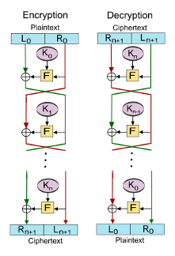
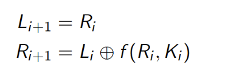
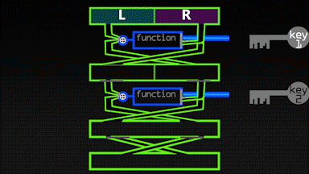
Son una estructura más general que incluye sustituciones y permutaciones en cada ronda.
En cada ronda, se aplican una capa de sustitución (S-Box) y una capa de permutación (permutación de columnas y filas) y sustituciones para mezclar los datos.
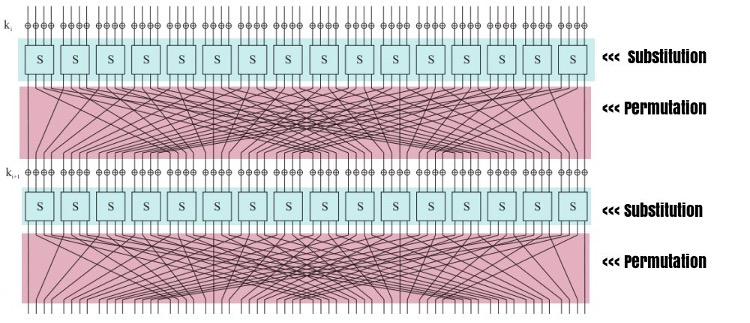
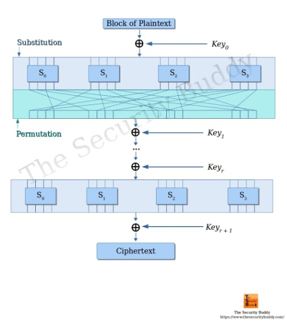
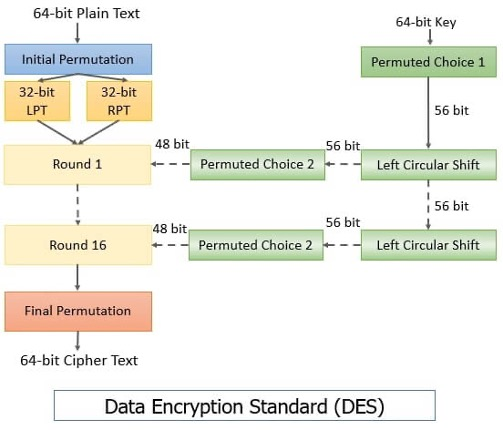
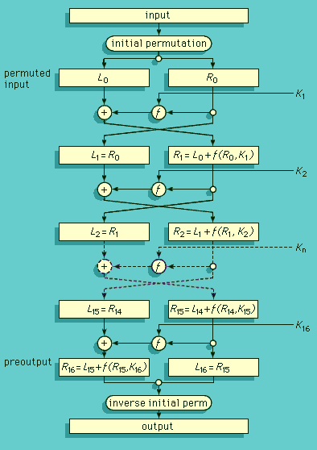
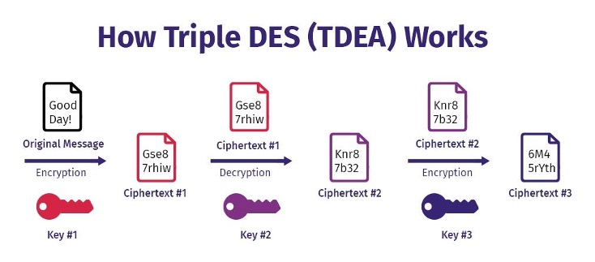
Debido a la longitud de la clave relativamente corta, DES es vulnerable a ataques de fuerza bruta. (El ataque meet-in-the-middle se asocia más con 2DES/3DES.)
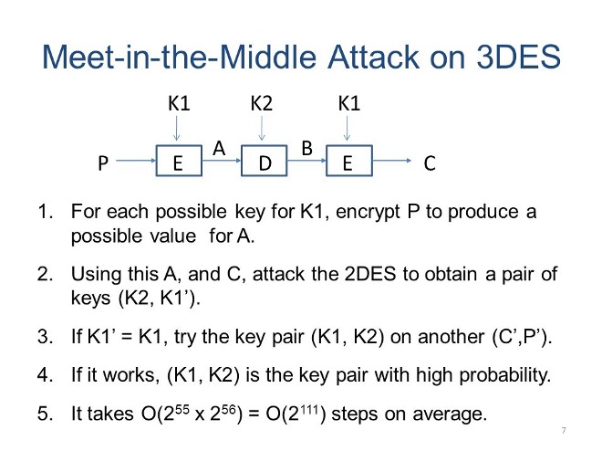
Algoritmo AES
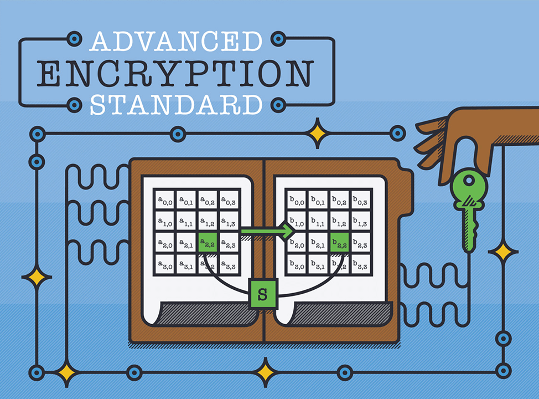
Estructura AES - Rondas
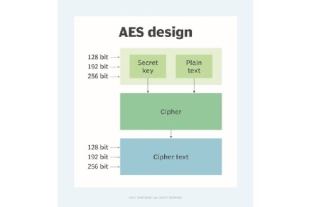
Estructura AES - Operación
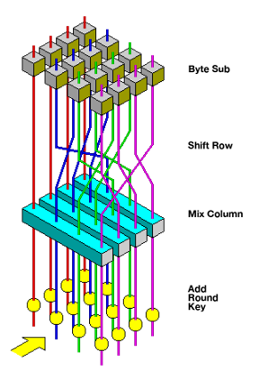
SubBytes
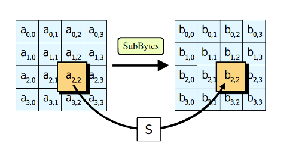
ShiftRows
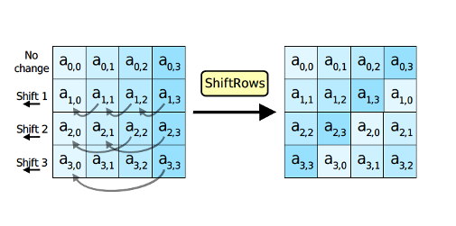
MixColumns
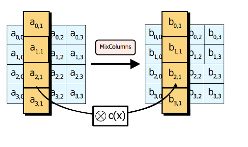
AddRoundKey
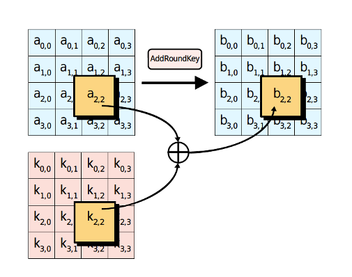
AES Rounds
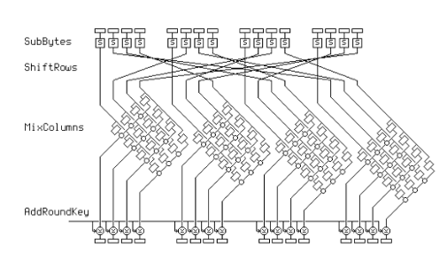
AES Diagram
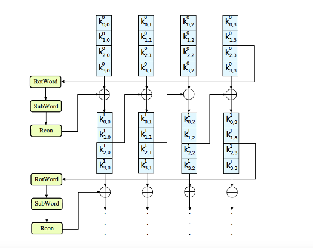
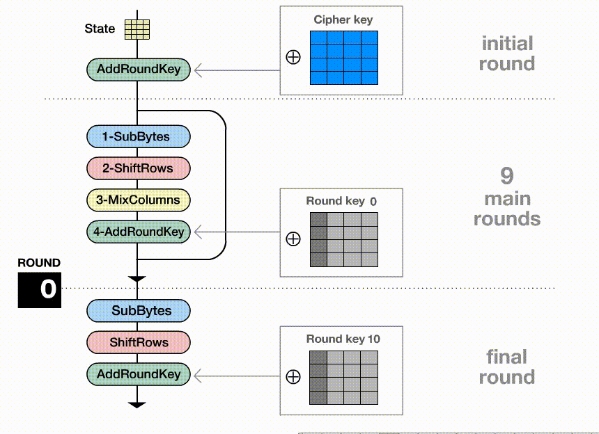
| Plataforma | Algoritmo Preferido | Razón |
|---|---|---|
| Servidores / Laptops | AES-GCM | AES-NI disponible |
| Móviles (ARM sin crypto) | ChaCha20-Poly1305 | Más rápido en software |
| Móviles modernos (ARM v8+) | AES-GCM | Crypto extensions |
AES es más seguro que DES debido a la longitud de la clave y la estructura de cifrado más robusta.
AES es más rápido y eficiente que DES, lo que lo hace ideal para aplicaciones modernas.
| Característica | DES | AES |
|---|---|---|
| Estructura | Feistel | SPN |
| Tamaño Bloque | 64 bits | 128 bits |
| Longitud Clave | 56 bits | 128, 192, 256 bits |
| Rondas | 16 | 10, 12, 14 |
| Seguridad | Bajo | Alto |
| Velocidad | Lento | Rápido |
Los cifrados de bloque necesitan modos de operación para cifrar grandes volúmenes de datos.
| Modo | Descripción | Ventajas |
|---|---|---|
| ECB (Electronic Codebook) | Cifra cada bloque de manera independiente. | Rápido y simple, pero no recomendado (revela patrones). |
| CBC (Cipher Block Chaining) | Cada bloque se XOR con el anterior antes de cifrar. | Oculta patrones, requiere IV aleatorio/único; no da integridad. |
| CTR (Counter) | Usa un contador para cifrar cada bloque. | Rápido y paralelizable; requiere nonce único y MAC/AEAD. |
| CFB (Cipher Feedback Mode) | Convierte el cifrado de bloque en un cifrado de flujo. | No necesita padding; hoy se prefiere AEAD (GCM/CCM). |
| OFB (Output Feedback Mode) | Similar a CFB pero con menos propagación de errores. | Puede servir para flujo; hoy se prefiere AEAD. |
| GCM (Galois/Counter Mode) | Basado en CTR, pero añade autenticación. | Cifrado + Integridad. |
| Aplicación | Algoritmo/Modo | Uso |
|---|---|---|
| BitLocker | AES-128/256-XTS | Cifrado de disco completo (Windows) |
| FileVault | AES-128-XTS | Cifrado de disco completo (macOS) |
| WPA3 | AES-128-GCMP | Cifrado de redes Wi-Fi |
| GPG/PGP | AES-128/192/256-CFB | Cifrado de archivos y emails |
| 1Password, Bitwarden | AES-256-GCM | Gestores de contraseñas |
| Aplicación | Algoritmo/Modo | Uso |
|---|---|---|
| Signal | AES-256-CBC + HMAC-SHA256 | Cifrado de mensajes end-to-end |
| AES-256-GCM | Cifrado de mensajes (protocolo Signal) | |
| TLS 1.3 | AES-128/256-GCM, ChaCha20-Poly1305 | HTTPS, conexiones seguras web |
| SSH | AES-128/256-CTR, ChaCha20-Poly1305 | Conexiones remotas seguras |